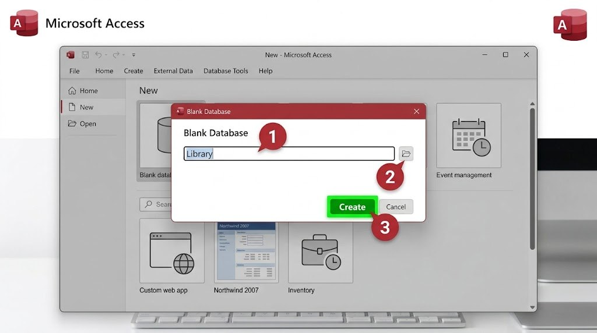

قبل إضافة أي بيانات، يجب إنشاء "ملف" قاعدة البيانات نفسه، تمامًا كما تُنشئ ملف وورد فارغًا قبل الكتابة فيه. سننشئ الآن ملف قاعدة بيانات المكتبة التي سنبني عليها جميع الدروس القادمة.

- افتح برنامج Microsoft Access من قائمة البرامج.
- من الشاشة الرئيسية، اختر "Blank database" (قاعدة بيانات فارغة).
- في خانة اسم الملف، اكتب "Library" بدلًا من الاسم الافتراضي.
- اختر مكان حفظ الملف على جهازك، وتأكّد من امتداده
.accdb. - اضغط زر "Create"، ليفتح Access مباشرة قاعدة البيانات الجديدة مع جدول فارغ جاهز.
هل تعلم؟
يفتح Access تلقائيًا جدولًا فارغًا باسم "Table1" بمجرد إنشاء قاعدة بيانات جديدة، وهو نفسه الجدول الذي سنعدّله في الدرس القادم.
جرّب بنفسك
أنشئ قاعدة بيانات جديدة فعليًا باسم "Library"، واحفظها في مجلد يسهل عليك تذكّره، فسنحتاجها في جميع الدروس القادمة.
الحل المتوقع
بعد الإنشاء، يجب أن تظهر لك نافذة Access مفتوحة، وفي الجانب الأيسر قائمة صغيرة تحتوي "Table1"، وهذا يعني أن العملية نجحت.